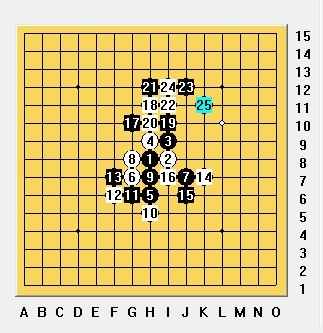

2011名人戦一次予選赛棋评
#1 2011名人戦一次予選赛棋评 作者：小兿 发表时间：2011-6-13 17:39:38
很高兴有幸认识了 Nakayama老师---日本新晋赛第四名，精通中文，待人谦逊随和。老师昨天去参加了日本名人战第一次预选。并把他的对局棋给了我看，给我提供了学习的机会。深表感谢！
Nakayama老师的两局都都是花月局，第一局 Nakayama老师执白，对手Koyama。
这个5局面个人感觉还是白好,黑到后边需考虑怎么把这手棋用上才算较成功.6手做了个小三角呈进攻型,颇为主动.这里黑7有几种思考:G10控制为主,两头限制2 、4这个活2.G9和Y反三角交叉,与其对攻.这2个点区别在于Y能更好控制白往上的拓展空间.由于白掌握先手目前,后边黑仍面临被迫防守.Koyama实战黑7选择了H10.白由于上边受限制,这时候往下反活2限制中发展做棋.稳妥。
 白8选择了G7这里白就有了3个活2.挡哪一边其余2个一连接似乎都不行了.这时黑选择了用进攻来防守，对于白10这里挡2边都可以,实战选择了下边,其目的是为了孤立这个5.黑很无奈的局面,这里仍需强防.然而Koyama11手走出J10做形成“x”型，估计想骗,但没成功.
白8选择了G7这里白就有了3个活2.挡哪一边其余2个一连接似乎都不行了.这时黑选择了用进攻来防守，对于白10这里挡2边都可以,实战选择了下边,其目的是为了孤立这个5.黑很无奈的局面,这里仍需强防.然而Koyama11手走出J10做形成“x”型，估计想骗,但没成功.
白毫不客气抓住机会发动真正的进攻了，之后Nakayama准确无误VCT告胜
第二局，Nakayama执黑，Koyama执白。
这个5通金星，这几手是常见下法.8手F7、G8都是比较好的点.Koyama 选择的这个8更为激烈，经过棋友们的研究9只能下在H7
到14手，白意图控制住黑的外势发展，但16手就感觉稍弱了点
 黑17转身去了上边,反而把白棋封在了里边.白当然不肯,18一是为了阻止黑往上继续发展,所以档了17的斜线攻击路线.其二呢目的在于分段黑左右的连接.黑棋19却不依不饶，20无奈之举，黑乘机达到继续控制上边空间的目的。到24手白都显得很被动。危机重重啊。25这个活2后黑棋接下来的发展很灵活。白如挡上边黑可能攻击方向就定在了右边。而挡下边，黑又可以从容的往左边过渡。
27手，开始强攻，白很苦的局面。33漂亮！如果说25之后黑棋还在观望中做棋那么这个33黑的强大优势就彻底肆无忌惮地体现了出来。白棋危在旦夕了。34果然一命呜呼。有兴趣的朋友可以拆拆34=E11后边怎么杀。这局Nakayama老师的棋值得我们学习的地方 1是17手没有在下边去缠绵而是漂亮的转身。2是 19.21.23这样逼迫白去填中间的棋从而黑的其形进一步定型为后来的进攻奠定了坚实的基础。3是 25这样的灵活运用子力。［此帖子已被 小兿 在 2011-6-13 17:48:25 编辑过］
［ 消逝的雨 于 2011-6-13 19:04:06 时花20金币送鲜花一朵］
［ 极地剑客 于 2011-6-13 19:16:40 时花20金币送鲜花一朵］
［ 茗弈宽容 于 2011-6-13 19:36:55 时花20金币送鲜花一朵］
［ 茗弈宽容 于 2011-6-13 19:37:03 时花20金币送鲜花一朵］
［ 茗弈宽容 于 2011-6-13 19:37:12 时花20金币送鲜花一朵］
［ 安娜制作所 于 2011-6-13 19:39:26 时花20金币送鲜花一朵］
［此帖子已被 小兿 在 2011-6-13 20:33:52 编辑过］
［此帖子已被 小兿 在 2011-6-13 20:36:49 编辑过］
［ 三国老凯 于 2011-6-13 21:16:26 时花20金币送鲜花一朵］
［ 逆刃 于 2011-6-13 22:23:11 时奖励此帖[金币加 100 威望加1］
［ 雅典娜 于 2011-6-14 7:59:17 时花20金币送鲜花一朵］
#2 Re:2011名人戦一次予選赛棋评 作者：安娜制作所 发表时间：2011-6-13 19:42:52
辛苦了SF#3 Re:2011名人戦一次予選赛棋评 作者：茗弈宽容 发表时间：2011-6-13 19:44:52
谢谢弟弟。不过似乎没发完整呢，我分析有的点都没有发出来。
#4 Re:2011名人戦一次予選赛棋评 作者：小兿 发表时间：2011-6-13 20:35:38
已纠正
#5 Re:2011名人戦一次予選赛棋评 作者：小元 发表时间：2011-6-14 11:09:36
现在日本名人战的预选赛已经是山口规则了吗？#6 Re:2011名人戦一次予選赛棋评 作者：励精 发表时间：2011-6-14 11:32:13
Nakayama Tomoharu 中山智晴 初段，日本南东北地区棋手（地震重灾区）Kudomi Takahiro 久富隆洋 七段，川崎市棋手。
Koyama Jun 小山 纯 四段，东京棋手，2008年关东新锐战冠军。
［ 茗弈宽容 于 2011-6-14 12:06:04 时花20金币送鲜花一朵］
#7 Re:Re:2011名人戦一次予選赛棋评 作者：茗弈宽容 发表时间：2011-6-14 12:05:40
引用：没纠正啊,我那几个分析图都没看到呢.算了.
原文由 小兿 发表于 2011-6-13 20:35:38 :已纠正
#8 Re:2011名人戦一次予選赛棋评 作者：茗弈宽容 发表时间：2011-6-14 12:06:36
谢谢精精老师的补充.回5楼朋友,好象是的.［此帖子已被 茗弈宽容 在 2011-6-14 12:08:12 编辑过］